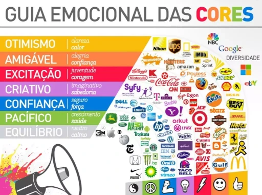

A cor é percebida através dos cones na nossa visão. Existem no olho cerca de seis milhões de cones e a ausência ou deficiência dos cones causa o daltonismo. A cor representa uma percepção para o cérebro e o estimula a diferenciar uma cor da outra. Assim, o cérebro aprende a corrigir a cor dos objetos, ou seja, se usar um óculos escuro, ao tirá-lo o cérebro mostrará tudo escuro por um tempo até que perceba que deve deixar a correção.
Veja mais sobre "A Percepção das Cores" em:Brasil Escola
As cores também podem mudar completamente a noção de espaço dentro da sua casa, você consegue “aumentar” e “diminuir” os cômodos somente com pintura.
Definir cores ideais para o seu negócio pode fazer a diferença nos seus resultados, já que a psicologia das cores pode influenciar na decisão de compra. Psicologia das Cores consiste em um estudo aprofundado sobre como o cérebro humano identifica as cores existentes e as transforma em sensações ou emoções. Significados das Cores na Psicologia A psicologia das cores reconhece emoções primárias nos seres humanos: raiva, medo, tristeza, nojo, surpresa, curiosidade, aceitação e alegria. Cada um desses sentimentos é representado por uma cor, sendo que estas desempenham um papel influenciador no comportamento das pessoas, segundo os estudos da psicologia.
Abaixo apresentamos um vídeo disponível no youtube sobre o assunto